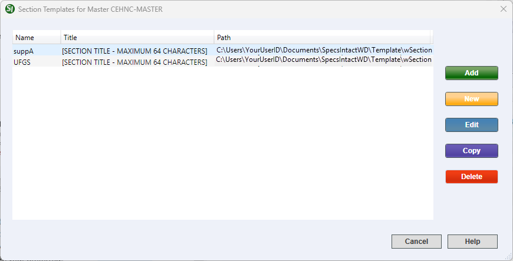

This command can also be executed from the keyboard shortcut Ctrl+T.
The Section Templates window is designed to manage Section Templates by either creating a new template, editing, copying, or deleting an existing template. Here, you should have two primary templates. The Supplemental Address List (suppA.tpl) and the UFGS Section Template are both system-generated templates with their distinct function. These templates are copied to the Working Directory during the SpecsIntact installation and when additional Working Directories are created.
 When developing a Section Template intended for a local Master (e.g., District, Region, Center, or specific AE Firm), it is highly recommended to initiate the process by copying an existing UFGS Section Template. This copied template should then be assigned a unique name and title to distinguish it. Following this initial duplication, the subsequent edits should involve editing the template's header, Preparing Activity (e.g., CEHNC, CESPK, AFRL, AECOM, JACOBS, etc.), and scope to align with the specific requirements of the local Master.
When developing a Section Template intended for a local Master (e.g., District, Region, Center, or specific AE Firm), it is highly recommended to initiate the process by copying an existing UFGS Section Template. This copied template should then be assigned a unique name and title to distinguish it. Following this initial duplication, the subsequent edits should involve editing the template's header, Preparing Activity (e.g., CEHNC, CESPK, AFRL, AECOM, JACOBS, etc.), and scope to align with the specific requirements of the local Master.
 The Section Templates window offers additional functionality through its right-click menu, allowing you to either Rename the template or directly Open it within the Windows File Explorer.
The Section Templates window offers additional functionality through its right-click menu, allowing you to either Rename the template or directly Open it within the Windows File Explorer.
 Click the buttons on the image below to see how to use each function.
Click the buttons on the image below to see how to use each function.

- Add button - Opens the File menu > Add Sections > Templates tab to add a Section Template to the selected Job or Master.
- New button - Opens the New Section Template window where you can designate a Name and Working Directory for the new template, as well as assign the Header Style, New Title, Scope, and Parts to include. The new template will be displayed in the list alongside the existing Section Template(s).
- Edit button - Opens the selected template in the SI Editor, so you can edit and save the template.
- Copy button - Opens the Copy Section Template window, where you can duplicate the selected template by specifying a new Template Name. When doing so, you have the option to either keep the template in its current Working Directory or direct the copy to an alternate one, or use the Copy to Master to copy the Section Template to an alternate Master.
- Delete button - Deletes the selected template.
Standard Windows Commands
 The Cancel button will close the window without recording any selections or changes entered.
The Cancel button will close the window without recording any selections or changes entered.
 The Help button will open the Help Topic for this window.
The Help button will open the Help Topic for this window.